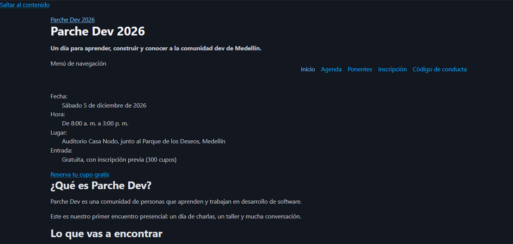

Acerca de mí
¡Información ficticia para actividades académicas!
Desarrolladora de software apasionada por transformar problemas complejos en soluciones digitales eficientes, elegantes y bien estructuradas. Con un enfoque principal en el desarrollo backend, frontend y el diseño de bases de datos sólidas, me especializo en construir la lógica y la arquitectura que hacen que las aplicaciones funcionen de manera fluida y escalable. Disfruto aprender constantemente nuevas tecnologías, optimizar procesos de código y aplicar un pensamiento lógico riguroso en cada proyecto. Mi objetivo es colaborar en equipos dinámicos donde pueda aportar código limpio, adaptabilidad y una visión integral del desarrollo, desde la concepción de la idea hasta su puesta en producción.
Experiencia
¡Experiencia ficticia para actividades académicas!
- Desarrolladora Web Full-Stack en XYZ Company (2020 - Presente)
- Desarrolladora Frontend en ABC Agency (2018 - 2020)
- Practicante de Desarrollo en DEF Startup (2017 - 2018)
| Proyecto | Imagen | Descripción | Enlace |
|---|---|---|---|
| ParcheDev |  |
Página web para evento FICTICIO. Con implementación de HTML y CSS básico |